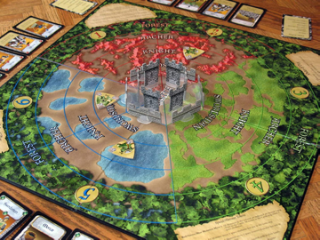
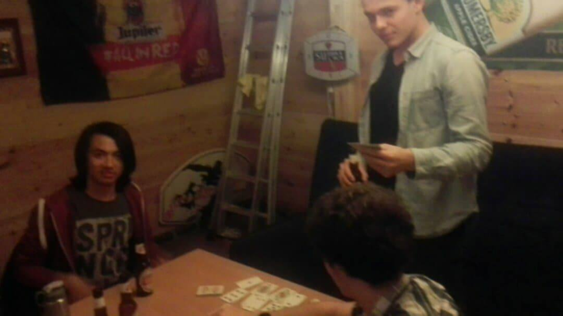
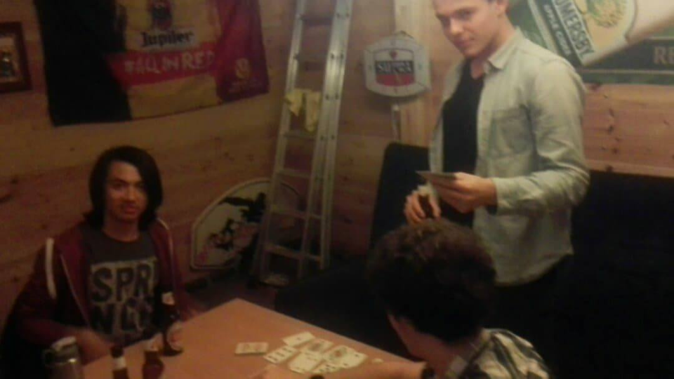
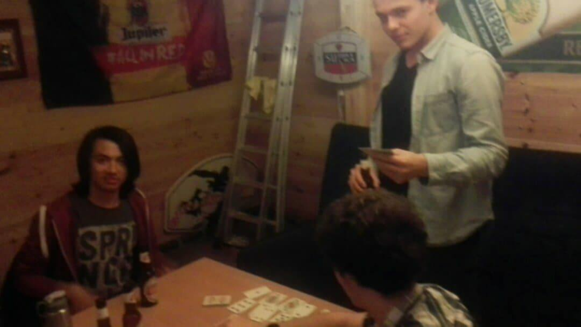
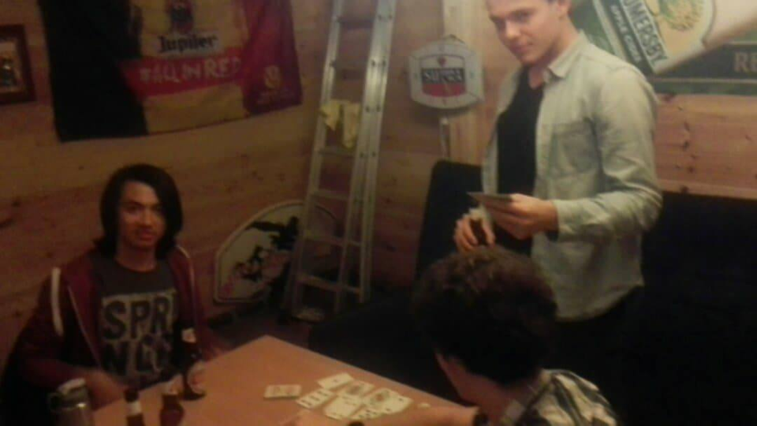

 



Als ontspanning en hobby speel ik vooral video Games maar ook bord en gezelschapspellen met vrienden in het weekend. Ik ben vooral een los persoon op het vlak van wat mijn hobbies betreft omdat ik meestal die overneem vna de mensen rondom mij. In mijn persoonlijke tijd hou ik mij meestal bezig met nieuwe dingen uitproberen/nieuwe dingen leren in verband met programmeren en of game design. Verder kijk ik ook graag youtube videos wat allerlei dingen kunnen bevatten (van leerrijke videos tot muziek).